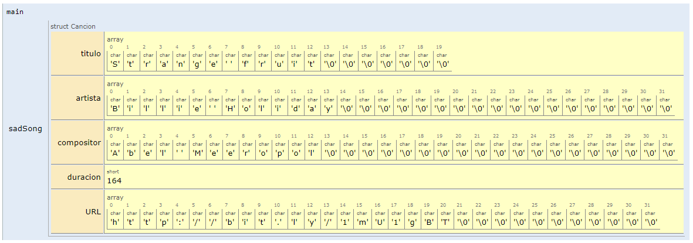
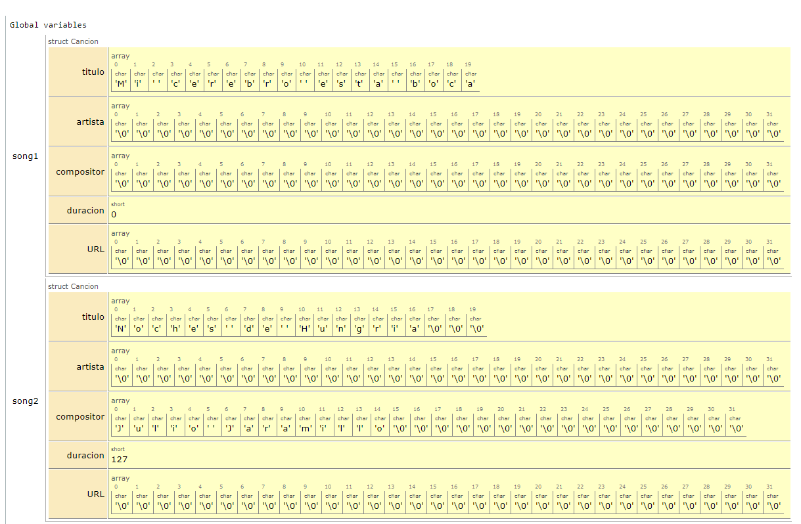
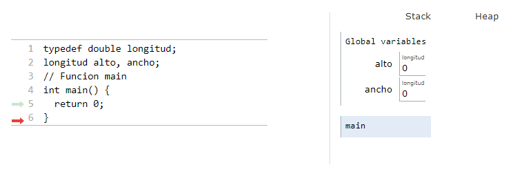
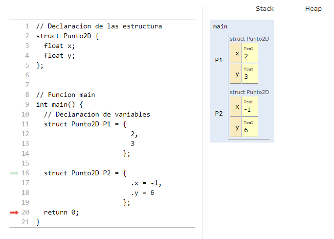
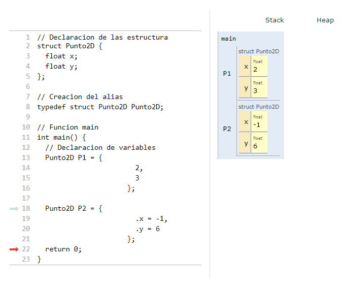

Anteriormente vimos que los arrays esta una coleccion de datos de un mismo tipo agrupados bajo un mismo nombre. C, pese a no ser un lenguaje de programacion orientado a objetos maneja un tipo de dato compuesto conocido como estructura. En si, una estructura es lo mas cercano a la definición que conocemos de clase en los lenguajes de programación, la unica diferencia respecto a las clases (sin hablar en el sentido estricto de la palabra), es que una estructura es como una clase con miembros pero sin metodos.
La mayor ventaja de estas, es que permiten la creacion de nuevos tipos de datos, liberando al programador de tener que restringirse al uso de los tipos de datos tipicos ofrecidos por el lenguaje como tal (int, double, float, etc.) lo cual hace posible organizar datos complicados, particularmente en largos programas.
Una estructura, es una coleccion de variables agrupadas bajo un mismo nombre. Las variables dentro de una estructura se denominan como miembros y pueden ser accedidas de manera individual en caso de ser necesario.
En resumen:
Una estructura puede contener cualquier número de miembros.
Los miembros de la estructura pueden ser de cualquier tipo.
Mediante estructuras es posible tratar como grupo cualquier conjunto de variables relacionadas.
Las estructuras facilitan la organización de datos complicados.
Las variables de estructuras se pueden definir de dos formas:
Listándolas inmediatamente después de la llave de cierre de la llave de cierre de la declaración de la estructura, algo como esto tal y como se muestra en el siguiente codigo en el cual se declaran dos variables (book1 y book2) tipo structBook (simulación):
Listando el tipo de la estructura seguida por las variables correspondientes en cualquier lugar del programa antes de utilizarlas, así, asumiendo que la estructura está declarada. El siguiente codigo muestra esto, notese que la declaración de las variables (book1 y book2) es similar a la declaración para datos no estructurados (int, double, etc), aquí, la unica difetencia es que estas serán para el caso datos tipo structBook (simulación):
Los conceptos aplicados para los tipos de datos simples aplican para estructuras tambien; de modo que, es posible crear variables normales, arrays, matrices y apuntadores de estructuras entre otros.
Empleando la estructura tipo Punto2D crear las siguientes variables:
Dos variables llamadas p1 y p2 (local).
Un array de 3 elementos llamado vP (local).
Un apuntador llamado *ptrP que apunte a p[1] (global).
Una matrix de 2x2 llamada mP (global).
La solución se muestra a continuación (simulación):
#include<stdio.h>structPunto2D{floatx;floaty;};// Datos tipo Punto2D globalesstructPunto2DvP[3];structPunto2DmP[2][2];intmain(){// Datos tipo Punto2D localesstructPunto2Dp1,p2;structPunto2D*ptrP=&vP[1];return0;}
A continuación, se muestra el resultado en memoria de la ejecución del código anterior:
Al igual que para el caso de las variables simples, las estructuras pueden tener valores iniciales una vez se declaran. Como estas con estructuras compuestas, lo que se hace para inicializarlas, es inicializar miembro por miembro. A continuacion se describen las dos formas de llevar a cabo esto.
Esta es similar a la empleada para los arrays, y lo que se hace es inicializar cada miembro de la estructura con el correspondiente valor inicial asociado. Cada valor inicial es separado por coma (,). Veamos.
Ejemplo: Iniciar la estructura Cancion con la siguiente informacion asociada a una cancion de Billie Holiday. A continuacion se muestra el codigo:
#include<stdio.h>// Declaracion de la estructurastructCancion{chartitulo[20];charartista[32];charcompositor[32];shortduracion;charURL[32];};// Funcion main intmain(){// Inicializacion de la variable (sadSong) tipo struct Cancion structCancionsadSong={"Strange fruit","Billie Holiday","Abel Meeropol",164,"http://bit.ly/1mU1gBT"};return0;}
La simulación del código anterior, se muestra a continuación:
A continuacion se muestra como quedan las estructura tipo Cancion (sadSong) al ejecutarse el codigo:

Fig. 55 Estructuras tipo cancion (variable sadSong).#
2.3.2. Inicialización específica de cada uno de los miembros#
Básicamente, consiste en la designación de cada uno de los miembros siguiendo la siguiente forma.
.miembro=valor;// designador
Ejemplo: Realizar la misma inicilizacion del caso anterior, pero en este caso emplear la inicializacion especifica de miembros:
#include<stdio.h>// Declaracion de la estructurastructCancion{chartitulo[20];charartista[32];charcompositor[32];shortduracion;charURL[32];};// Funcion main intmain(){// Inicializacion de la variable (sadSong) tipo struct Cancion structCancionsadSong={.titulo="Strange fruit",.artista="Billie Holiday",.compositor="Abel Meeropol",.duracion=164,.URL="http://bit.ly/1mU1gBT"};return0;}
La simulación del código anterior, se puede realizar a continuación:
Note, que el resultado es el mismo que el mostrado para el ejemplo de inicializacón anteriormente realizado.
2.3.3. Caso en el que no se inicializan todos lo miembros#
Ya sea que se emplee una u otra de las formas anteriormente mencionadas, es posible inicializar parcialmente una variable tipo estructura, para ello, basta con no pasar todos los elementos que puede contener la lista de inicialización. A continuación se muestra un ejemplo:
Ejemplo: Crear dos variables tipo structCancion, estas variables no tendran todos los parametros inicialidos:
#include<stdio.h>// Declaracion de la estructurastructCancion{chartitulo[20];charartista[32];charcompositor[32];shortduracion;charURL[32];};// Variables globales tipo struct CancionstructCancionsong1={"Mi cerebro esta boca abajo"};structCancionsong2={.titulo="Noches de Hungria",.compositor="Julio Jaramillo",.duracion=127};// Funcion main intmain(){return0;}
La simulación del código se muestra a continuación:
En la siguiente figura se muestra el resultado del codigo anterior, notese lo que sucede como quedan los miembros que no fueron inicializados.

Fig. 56 Variables tipo cancion sin inicializar todos sus miembros.#
2.4. Empleo de la palabra clave typedef para crear alias#
La palabra reservada typedef permite a un programador crear un sinónimo de un tipo de dato definido por el usuario o de un tipo ya existente. La sintaxis para usar esta palabra clave es la siguiente:
Teniendo en cuenta que alto y ancho son medidas de longitud, podemos crear un alias para una variable tipo double llamado longitud y el efecto será el mismo que el del caso anterior, el código para el caso sera el siguiente (simulación):
typedefdoublelongitud;longitudalto,ancho;
El resultado se muestra a continuacion:

Fig. 57 Uso de typedef para la creacion de alias.#
La mayor ventaja del uso del typedef se ve con las estructuras. A continuación se muestra el resultado:
Sin usar typedef: Cree dos variables tipo Punto2D llamadas P1 y P2 con valores (2,3) y (-1,6). No emplee typedef:
#include<stdio.h>// Declaracion de las estructurastructPunto2D{floatx;floaty;};// Funcion main intmain(){// Declaracion de variablesstructPunto2DP1={2,3};structPunto2DP2={.x=-1,.y=6};return0;}
La simulación se muestra a continuación:
La salida del programa anterior se muestra a continuación:

Fig. 58 Uso variables tipo structPunto2D sin usar typedef.#
Usando typedef: Realice lo mismo que en el punto anterior, pero esta vez haga uso de la palabra clave typedef para crear un alias para structPunto2d llamado Punto2D:
#include<stdio.h>// Declaracion de las estructurastructPunto2D{floatx;floaty;};// Creacion del aliastypedefstructPunto2DPunto2D;// Funcion main intmain(){// Declaracion de variablesPunto2DP1={2,3};Punto2DP2={.x=-1,.y=6};return0;}
La simulación para este codigo se muestra a continuación:
La salida del programa anterior es:

Fig. 59 Uso variables tipo structPunto2D usando typedef.#
Por manipulacion de la estructuras (dentro de este contexto) nos queremos referir al acceso a los miembros de esta, tal y como sucede cuando se accede a los miembros de un objeto en el caso de la POO. Para el caso de las estructuras en particulas, existen dos formas de acceder:
Crear dos puntos P1 y P2. Luego de su declaracion inicialicelos con los siguientes valores: (1,1) y (10,3).
// Declaracion de las estructurastructPunto2D{floatx;floaty;};// Creacion del aliastypedefstructPunto2DPunto2D;// Funcion main intmain(){// Declaracion de los puntosPunto2DP1,P2;// Manipulacion (acceso a los miembros)P1.x=1;P1.y=1;P2.x=10,P2.y=3;return0;}
La simulación del programa se puede realizar a continuación:
Observe como quedan los campos de las variables P1 y P2 despues de la ejecucion del codigo anterior.
La información sobre los libros se resume en la siguiente tabla:
#
BookID
Title
Author
Pages
Price
1
1211
C Primer Plus
Stephen Prata
984
585.00
2
1212
The ANSI C Programming
Dennis Ritchie
214
125.00
El código solucion se muestra a continuación, note que la forma como se accede a la variable tipo Book en el correspondiente arreglo es book[i]v para el caso, por ende la forma de acceder a cada uno de los miembros del array en cuestion será book[i].miembro:
#include<stdio.h>#include<string.h>// Declaracion de las estructurastructBook{intbook_id;chartitle[24];charauthor[20];intpages;floatprice;};// Creacion del aliastypedefstructBookBook;// Declaracion del array de librosBookbooks[2];intmain(){// Manipulacion (acceso a los miembros)// Libro # 1books[0].book_id=1211;//OJO: books[0].title = "C Primer Plus" es un ERROR strcpy(books[0].title,"C Primer Plus");strcpy(books[0].author,"Stephen Prata");books[0].pages=984;books[0].price=585.00;// Libro #2books[1].book_id=1212;strcpy(books[1].title,"The ANSI C Programming");strcpy(books[1].author,"Dennis Ritchie");books[1].pages=214;books[1].price=125.00;return0;}
El código anterior puede ser simulado a continuación:
A continuacion se muestra el resultado en memoria:
Fig. 62 Resultado en memoria para variables asociadas a los libros.#
El operador flecha (->) es empleado cuando se hace uso de punteros a estructuras, su sintaxis es de la siguiente forma:
<puntero_estructura>-><nombre_miembro>=datos;
Ejemplos
Suponga que se tiene una estructura asociada a las fechas. Tambien, suponga que tiene una variable llamada diaDestino cuyo valor asociado es el 5 de noviembre de 1955 (primer viaje en el tiempo de Marty MacFly). Luego cree una variable tipo apuntador a esta este tipo de estructura y modifique a traves de este el valor de diaDestino al 21 de octubre de 2015 (fecha a la cual viaja Marty MacFly al futuro). Imprima los valores en cada caso.
El código solucion se muestra a continuacion:
#include<stdio.h>structDate{unsignedyear;unsignedmonth;unsignedday;};typedefstructDateFecha;intmain(){/* Declaracion de variables */FechadiaDestino;// Varible tipo fechaFecha*diaPtr;// Variable tipo apuntador a fechadiaPtr=&diaDestino;// Inicializacion del apuntador/* Viaje al pasado */// Fijando por medio del operador punto (.) los valores // de dia destino al 5 de noviembre de 1955 diaDestino.year=1955;diaDestino.month=11;diaDestino.day=5;printf("Destination time: %d/%d/%d\n",diaDestino.day,diaDestino.month,diaDestino.year);/*Viaje al futuro */// Fijando por medio del operador flecha (->) los valores // de dia destino al 21 de octubre de 2015diaPtr->year=2015;diaPtr->month=10;diaPtr->day=21;printf("Destination time: %d/%d/%d\n",diaPtr->year,diaPtr->month,diaPtr->year);return0;}
La simulación del código anterior se muestra a continuación:
Hay que aclarar que el uso del operador punto (.) tambien puede ser empleado con variables tipo apuntador, para ello se sigue la siguiente forma:
Implemente el mismo ejemplo anterior, pero esta vez use el operador punto (.) para modificar los miembros de la variable tipo Date a traves del apuntador.
El codigo solución se muestra a continuacion:
#include<stdio.h>structDate{unsignedyear;unsignedmonth;unsignedday;};typedefstructDateFecha;intmain(){/* Declaracion de variables */FechadiaDestino;// Varible tipo fechaFecha*diaPtr;// Variable tipo apuntador a fechadiaPtr=&diaDestino;// Inicializacion del apuntador/* Viaje al pasado */// Fijando por medio del operador punto (.) los valores // de dia destino al 5 de noviembre de 1955 diaDestino.year=1955;diaDestino.month=11;diaDestino.day=5;printf("Destination time: %d/%d/%d\n",diaDestino.day,diaDestino.month,diaDestino.year);/*Viaje al futuro */// Fijando por medio del operador flecha (->) los valores // de dia destino al 21 de octubre de 2015(*diaPtr).year=2015;(*diaPtr).month=10;(*diaPtr).day=21;printf("Destination time: %d/%d/%d\n",diaPtr->year,diaPtr->month,diaPtr->year);return0;}
La simulación se muestra a continuación:
Si realiza la simulación, podrá notar que la salida es exactamente la misma que la del ejemplo anterior.
La siguiente tabla muestra información relacionada con los personajes mostrados anteriormente:
Nombre
Nacimiento
Muerte
Profesion
Ernest Hemingway
21/07/1899
02/07/1961
Escritor
Albert Einstein
14/03/1879
18/04/1955
Fisico
Note que para el problema podemos crear dos estructuras, una asociada al personaje y otra asociada a las fechas. Asi mismo, podemos ver que las fechas pueden ser tratadas como estructuras del personaje. A continuacion vamos a mostrar el código que define ambas estructuras:
Los conceptos vistos hasta el momento sobre funciones tambien aplican a las estructuras ya que las estructuras pueden ser usadas como parametros y valores de retorno por citar unos cuantos casos. La unica cosa adicional, respecto a las funciones que trabajan con variables normales, es que las funciones con estructuras hacen uso de los operadores de acceso para la manipulacion y el procesamiento de los datos de acuerdo a lo que se desea que haga la funcion. Como en el caso tradicional, las funciones en las que se emplean estructuras pueden ser pasadas por valor y por referencia. A continuacion se describe cada caso:
En este caso la estructura pasada como argumento a la funcion es copiada al parametro de la funcion, de modo que el procesamiento se hace sobre la copia y no sobre la estructura pasada como argumento.
Ejemplos
Definir una estructura que este asociada a un numero completo. Luego haga una funcion que imprima el numero complejo en cuestion en la forma $parteReal + parteImaginaria*i$. Luego probar el programa para imprimir los numeros: $2$, $-3i$, $-2.3 + 10.5i$, $1.23 - 3.67i$